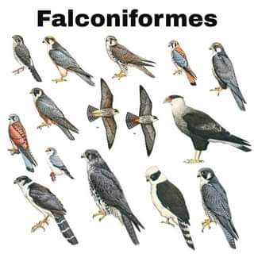
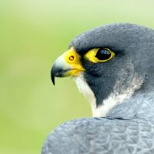

FALCONIFORMES
Taxonomía y características principales

Este grupo fue bautizado por la palabra latina utilizada para nombrar al “halcón” (Falco), por lo que este orden significa “los que tienen forma de halcón”. Las rapaces diurnas radicionalmente en cinco familias de un único orden: familia Cathartidae, familia Pandionidae , familia Accipitridae , familia Sagittariidae y familia Falconidae
Las aves falconiformes tienen un cuerpo fuerte y compacto, miembros robustos y cabeza voluminosa, más o menos redondeada, con un pico fuerte y cortante en forma de garfio; en la base del mismo y rodeando las aberturas nasales, existe un engrosamiento carnoso característico, llamado cera por su aspecto, que suele ser del mismo color que las patas. El plumaje es recio, compacto y elástico; las cobertoras, en general escasas, poseen abundantes mechones de plumón en la base; poseen las 10 rémiges primarias y 13 o 16 secundarias, y generalmente 12 o 14 timoneras, número que se mantiene muy constante. En muchas especies las plumas cubren el tarso e incluso los dedos. El colorido es poco llamativo, críptico, con predominio de los grises, ocres y azulados, formando barreados que disimulan al ave tanto cuando vuela como cuando está posada al acecho. La muda ocurre generalmente una vez al año; es un fenómeno de vital importancia para las aves de presa ya que su capacidad de vuelo y su supervivencia depende del estado de su plumaje. Las aves falconiformes poseen una extraordinaria agudeza visual; un halcón sacre es capaz de ver una avutarda en movimiento a 10 kilómetros de distancia. La retina tiene dos fóveas, una central y otra lateral, que dotan al ojo de una sensibilidad superior a la de los mamíferos.
Las aves falconiformes tienen un cuerpo fuerte y compacto, miembros robustos y cabeza voluminosa, más o menos redondeada, con un pico fuerte y cortante en forma de garfio; en la base del mismo y rodeando las aberturas nasales, existe un engrosamiento carnoso característico, llamado cera por su aspecto, que suele ser del mismo color que las patas. El plumaje es recio, compacto y elástico; las cobertoras, en general escasas, poseen abundantes mechones de plumón en la base; poseen las 10 rémiges primarias y 13 o 16 secundarias, y generalmente 12 o 14 timoneras, número que se mantiene muy constante. En muchas especies las plumas cubren el tarso e incluso los dedos. El colorido es poco llamativo, críptico, con predominio de los grises, ocres y azulados, formando barreados que disimulan al ave tanto cuando vuela como cuando está posada al acecho. La muda ocurre generalmente una vez al año; es un fenómeno de vital importancia para las aves de presa ya que su capacidad de vuelo y su supervivencia depende del estado de su plumaje. Las aves falconiformes poseen una extraordinaria agudeza visual; un halcón sacre es capaz de ver una avutarda en movimiento a 10 kilómetros de distancia. La retina tiene dos fóveas, una central y otra lateral, que dotan al ojo de una sensibilidad superior a la de los mamíferos.
Naturaleza

Las falconiformes son aves característicamente carnívoras y suelen cazar de día o en el crepúsculo, o bien alimentarse de carroña, como los buitres. Los halcones matan a sus presas de un picotazo, fracturándoles las vértebras cervicales, mientras que el resto suelen matarlas por estrangulación, empleando para ello sus fuertes garras y no utilizan el pico hasta que la víctima deja de moverse. Son aves poco gregarias que, en general, no suelen formar bandadas.
Casi todas las especies crían durante los primeros meses de la primavera; la monogamia suele ser lo más corriente, colaborando ambos sexos en la construcción del nido; los halcones, no obstante, realizan la puesta sobre roca o la tierra desnuda, sin ningún tipo de preparación previa. El apareamiento va precedido de paradas nupciales aéreas en las que los machos emiten penetrantes gritos y expulsan de su territorio a cualquier competidor. Las especies más pequeñas ponen cuatro o cinco huevos, y las de mayor tamaño solo uno o dos. Los polluelos nacen muy poco desarrollados y cubiertos de un denso plumón blanco o grisáceo, crecen deprisa y comienzan pronto a emplumar. El macho suele cazar y aportar alimentos a su compañera e hijos; esta despedaza las presas y las reparte entre las crías. Tras abandonar el nido los jóvenes son alimentados y protegidos por sus padres durante algún tiempo y también los adiestran para la caza.
Casi todas las especies crían durante los primeros meses de la primavera; la monogamia suele ser lo más corriente, colaborando ambos sexos en la construcción del nido; los halcones, no obstante, realizan la puesta sobre roca o la tierra desnuda, sin ningún tipo de preparación previa. El apareamiento va precedido de paradas nupciales aéreas en las que los machos emiten penetrantes gritos y expulsan de su territorio a cualquier competidor. Las especies más pequeñas ponen cuatro o cinco huevos, y las de mayor tamaño solo uno o dos. Los polluelos nacen muy poco desarrollados y cubiertos de un denso plumón blanco o grisáceo, crecen deprisa y comienzan pronto a emplumar. El macho suele cazar y aportar alimentos a su compañera e hijos; esta despedaza las presas y las reparte entre las crías. Tras abandonar el nido los jóvenes son alimentados y protegidos por sus padres durante algún tiempo y también los adiestran para la caza.